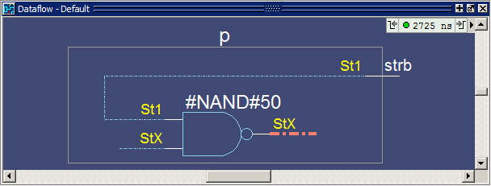

Displaying Hierarchy in the Dataflow Window
You can
display connectivity in the Dataflow window using hierarchical instances.
You enable this by modifying the options prior to adding objects
to the window.
Procedure
- Change
options to display hierarchy.
- Select from the Main window
menus. (When the Dataflow window is undocked, select from
the Dataflow window menu bar.) This will open the Dataflow Options
dialog box (Figure 1).Figure 1. Dataflow Options Dialog Box

- Select Show: Hierarchy and then click OK.
- Select from the Main window
menus. (When the Dataflow window is undocked, select from
the Dataflow window menu bar.) This will open the Dataflow Options
dialog box (Figure 1).
- Add
signal t_out to the Dataflow window.
- Type
“add dataflow /top/p/t_out” at the VSIM> prompt.
The Dataflow window will display t_out and all hierarchical instances (Figure 2).
Figure 2. Displaying Hierarchy in the Dataflow Window
- Type
“add dataflow /top/p/t_out” at the VSIM> prompt.